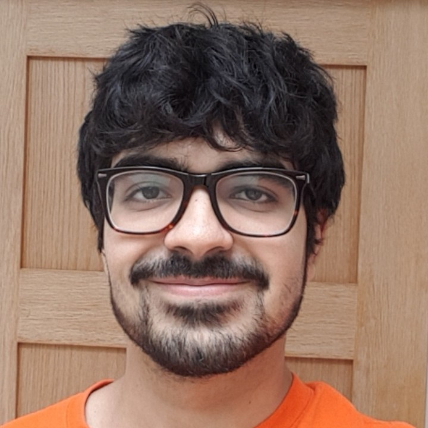

Anirudh Lakra
About me
Currently, I am a penultimate year student on track towards obtaining a Master of Engineering in Computer Science from University College London, UCL. Due to my love of mathematics and programming, I want to become an ML or Software Engineer after I graduate.
In my free time, I enjoy reading non-fiction, philosophy, working out, and chess. Good books are scarce which means that I am always on the lookout for them. If you know any good books, shoot me an email about it. Regarding philosophy, I am particularly interested in the theory of mind and epistemology.
Recently, I have been delving deeper into the field of data science and improving my ML skills in Python. You can view some of my notebooks on Kaggle. Apart from ML, I have also completed various software engineering projects as well. One application that I am proud of is Consultation+, an application targeted at GP’s. You can read about it and view the code here.